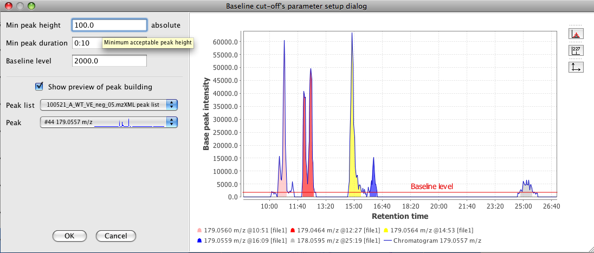

This method is very simple and useful to demonstrate the functionality of chromatogram deconvolution. First, the algorithm removes the lowest part of the chromatogram below a baseline level specified by the user. Remaining peaks which span above the baseline level are recognized if they fulfill the minimal requirements of height and length.
